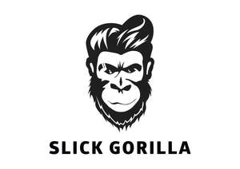

Trade Mark Journal No.2025/037 12 September 2025
UK00004255745 28 August 2025 (3)

- Class 3
- Hair cosmetics; Products for protecting coloured hair; Hair shampoos; Hair styling lotions; Hair lotions; Hair shampoo; Hair moisturizers; Hair serums; Hair lighteners; Hair balms; Hair colourants; Cosmetic hair lotions; Hair moisturisers; Hair oils; Hair texturizers; Dyes for the hair; Hair dyes; Hair creams; Hair pomades; Hair colorants; Colouring lotions for the hair; Non-medicated hair shampoos; Hair lotion; Styling sprays for the hair; Hair care lotions; Shampoos for human hair; Hair conditioners; Mousses [toiletries] for use in styling the hair; Hair lacquers; Hair styling gels; Styling gels for the hair; Hair styling waxes; Hair care lotions [for cosmetic use]; Hair sprays; Cosmetics for the use on the hair; Mousses being hair styling aids; Cosmetic preparations for the hair and scalp; Hair protection lotions; Hair styling gel; Hair care serums; Hair rinses [for cosmetic use]; Hair mousses; Cosmetic products for the shower; Hair gels; Hair care creams; Hair relaxers; Hair mascara; Hair bleaches; Hair dye; Non-medicated hair lotions; Wax treatments for the hair; Hair liquids; Hair tonics [for cosmetic use]; Hair conditioner; Beauty preparations for the hair; Hair care creams [for cosmetic use]; Hair styling preparations; Hair conditioners for babies; Hair styling spray; Hair nourishers; Hair emollients; Hair gel; Hair masks; Hair desiccating treatments for cosmetic use; Hair tonics; Hair moisturising conditioners; Soap products; Hair protection creams; Hair preparations and treatments; Cosmetic products in the form of aerosols for skin care; Hair colouring and dyes; Hair cream; Hair color removers; Hair mousse; Hair strengthening treatment lotions; Moisturisers; Skin moisturisers; Moisturiser; Moisturisers [cosmetics]; Moisturizers; Moisturising creams; Non-medicated moisturisers; Anti-ageing moisturiser; Cosmetic moisturisers; Moisturising creams, lotions and gels; Skin moisturiser; Body moisturisers; Moisturizing creams; Moisturising skin lotions [cosmetic]; Skin moisturizers; Moisturising skin creams [cosmetic]; Skin moisturizers used as cosmetics; Anti-aging moisturizers; After-sun lotions; Anti-aging moisturizers used as cosmetics; Aftershave moisturising cream; Anti-ageing creams; Suncare lotions; Facial moisturisers [cosmetic]; Exfoliant creams; After-sun creams; Moisturizing body lotions; Moisturising body lotion [cosmetic]; Skin lotions; Lotions for the skin; Moisturising gels [cosmetic]; Skin moisturizer; Exfoliating creams; Sun-tanning creams and lotions; Sunscreen creams; Pre-shave creams; Emollient shampoos; Facial moisturizers; Non-medicated skin serums; Sunscreen lotions; Scented body lotions and creams; Skin creams; Creams for the skin; Cosmetic creams and lotions; Non-medicated skin lotions; Anti-wrinkle creams; Skin emollients; After-sun oils [cosmetics]; Creams for firming the skin; Aftershave lotions; Suntan creams [self-tanning creams]; Aftershave creams; After-sun lotions [for cosmetic use]; After sun moisturisers; Skin creams [non-medicated]; Non-medicated skin creams; Suncare lotions [for cosmetic use]; Skin lotion; Sun-block lotions; Hydrating creams for cosmetic use; Oils for moisturising the skin after sunbathing; Anti-aging creams; Skin emollients [non-medicated]; Cosmetic nourishing creams; Skin moisturizer masks; After-shave lotions; After-shave creams; Skin hydrators; Skin balms (Non-medicated -); Non-medicated skin balms; Anti-ageing creams [for cosmetic use]; After-sun milks [cosmetics]; Skin cleansers; Skin cleansers [non-medicated]; Sunscreen creams [for cosmetic use]; Aftershave balms; Cleansing lotions; Skin cleansing lotion; Non-medicated skin clarifying lotions; Creams for tanning the skin; Skin balms [cosmetic]; Body creams [cosmetics]; Cosmetic creams for the skin; Skin creams [cosmetic]; Skin creams [for cosmetic use]; Anti-wrinkle creams [for cosmetic use]; Suntan lotion [cosmetics]; Skin whitening creams; Creams (Skin whitening -); Facial creams [cosmetics]; Emollients; Non-medicated cleansing creams; Moisturizing preparations for the skin; After-shave balms; Exfoliants for the cleansing of the skin; Aromatherapy creams; Non-medicated lotions; Milky lotions for skin care; Cleansing creams; Anti-ageing serum; Mattifying gel cream; Cosmetic creams for dry skin; Skin recovery creams [cosmetics]; Skincare cosmetics; Skin cleansers [cosmetic]; Facial lotions; Night creams [cosmetics]; Moisturising preparations; Shaving lotions; Non-medicated stimulating lotions for the skin; Suntan lotions; Anti-aging creams [for cosmetic use]; Beauty balm creams; Sun-tanning lotions; Body firming creams; Scented body creams; Suntan creams; After-sun milk [cosmetics]; Body and facial creams [cosmetics]; Depilatory lotions; Aromatherapy lotions; Non-medicated creams; Shower creams; Beauty serums with anti-ageing properties; Massage oils and lotions; Creams (Non-medicated -) for the body; Sun-tanning creams; Moisturising concentrates [cosmetic]; Fluid creams [cosmetics]; Skin cleansing cream [non-medicated]; Skin care lotions [cosmetic]; Body wash; Hair and body wash; Body washes; Body scrub; Body soap; Body lotion; Body shampoos; Body spray; Toning lotion, for the face, body and hands; Facial wash; Cakes of soap for body washing; Face and body lotions; Body lotions; Body scrubs; Soap free washing emulsions for the body; Face wash; Exfoliating body scrub; Moisture body lotion; Body cleansing foams; Body mask lotion; Body sprays; Body cream soap; Lotions for face and body care; Body oils; Body cream; Body creams; Body deodorants; Body mist; Face and body creams; Body and facial oils; Body powder; Body polish; Body gels; Make-up for the face and body; Exfoliating scrubs for the body; Body milk; Deodorants for body care; Body oil; Non-medicated body soaks; Body massage oils; Body splash; Body oil spray; Face wash [cosmetic]; Soaps for body care; Body and facial butters; Scented body spray; Hand and body butter; Body butters; Face and body glitter; Body mask cream; Body masks; Cosmetic body mud; Body mask powder; Body soufflé; Scented body lotions; Body butter; Body glitter; Body emulsions; Body paint (cosmetic); Cosmetic body scrubs; Body scrubs [cosmetic]; Wax strips for removing body hair; Facial washes; Face and body masks; Body fragrances; Body milks; Body sprays [non-medicated]; Body oils [for cosmetic use]; Body and facial gels [cosmetics]; Sparkling fluid for the body; Make-up preparations for the face and body; Body gels [cosmetics]; Body powder (Non-medicated -); Body care cosmetics; Body oil [for cosmetic use]; Baby body milks; Perfumed body lotions [toilet preparations]; Hand washes; Body cream for cosmetic use; Mouth washes; Beauty creams for body care; Windshield washing fluid; After shave lotions; Preparations for use after shaving; Preparations for use before shaving; Shave gel; Shave creams; Shave balm; After sun creams; Hair removal and shaving preparations; Shaving preparations; Shaving sets, comprised of shaving cream and aftershave; Shaving lotion; Shaving gel; Shaving soap; Shaving cream; Shaving balm; Shaving sprays; Shaving gels; Shaving balms; Shaving creams; Shaving mousse; Shaving sticks [preparations]; Shaving soaps; Shaving oil; Day lotion; Shaving oils; Shaving stones; Foams for use in shaving; Shaving foams; Rinsing aids for use when washing clothes; Hair removing cream; Cosmetic preparations for dry skin during pregnancy; Shaving foam; Foam for use in shaving; Day cream; Hair grooming preparations; Alum blocks for shaving; Make up removing preparations; Day creams; Shaving preparations in liquid form; Hair removal preparations; Hair treatment preparations; Shaving stones [astringents]; Hair rinses [shampoo-conditioners]; Beard care preparations; Epilating waxes; Hair relaxing preparations; Preparations for removing gel nails; Hair wax; Cosmetic preparations for bath and shower; Hair straightening preparations; Bath and shower preparations; Shower and bath preparations; Preparations for use in the bath or shower; Preparations for the bath and shower; Hair cleaning preparations; Compounds for skin care after exposure to the suns rays; Preparations for setting hair; Non-medicated scalp treatment cream; Creams for fixing hair; Cosmetic hair regrowth inhibiting preparations; Pre-shave preparations; Facial peel preparations for cosmetic use; Wax stripping preparations; Shower cream; Bath preparations, not medicated; Night cream; Shower and bath gel; Perfume; Perfumes; Perfume oils; Perfumery and fragrances; Amber [perfume]; Fragrances; Oils for perfumes and scents; Fragrance sachets; Musk [perfumery]; Cologne; Perfume water; Aromatics for perfumes; Room perfume sprays; Liquid perfumes; Potpourris [fragrances]; Colognes; Scents; Fragrance emitting wicks for room fragrance; Aromatics for fragrances; Perfumery; Perfumes for cardboard; Fragrance refills for non-electric room fragrance dispensers; Cedarwood perfumery; Extracts of perfumes; Eau de cologne [cologne water]; Body deodorants [perfumery]; Extracts of flowers [perfumes]; Flowers (Extracts of -) [perfumes]; Extracts of flowers being perfumes; Perfumes for ceramics; Deodorants for personal use [perfumery]; Ionone [perfumery]; Perfumeries; Perfume oils for the manufacture of cosmetic preparations; Fragrance preparations; Vanilla perfumery; Perfumed potpourris; Fragrances for automobiles; Household fragrances; Perfumed sachets; Room perfumes in spray form; Fragrance sachets for eye pillows; Natural oils for perfumes; Perfumery products; Aftershave; Room fragrances; Feminine deodorant sprays; Perfumed soaps; Mint for perfumery; Cologne water; Solid perfumes; Scented water for fragrancing; Air fragrance preparations; Perfuming sachets; Peppermint oil [perfumery]; Perfumed soap; Scented oils; Scented linen sprays; Synthetic perfumery; Aftershave balm; Scented sachets; Perfumed powders [for cosmetic use]; Synthetic vanillin [perfumery]; Geraniol for fragrancing; Aftershaves; Scented soaps; Perfumed powder [for cosmetic use]; Incense spray; Perfumed powders; Perfumed creams; Essential oils as perfume for laundry purposes; Eau de Cologne; Eau de cologne; Sachets for perfuming linen; Linen (Sachets for perfuming -); Perfumed powder; Eau de colognes; Essences for fragrancing; Scented room sprays; Ethereal oils for fragrancing; Suntan oils [cosmetics]; Fumigation preparations [perfumes]; Perfumed lotions [toilet preparations]; After-shave; Fragrance for household purposes; Eaux de Cologne; Eaux de cologne; Scented fabric refresher sprays; Skin fresheners [cosmetics]; Tanning oils [cosmetics]; Deodorant soap; Soap (Deodorant -); Incense sachets; Fragrant sachets; Agarwood [incense]; Aftershave milk; Geraniol fragrancing compounds; Roll-on deodorants [toiletries]; Natural perfumery; Perfumed water; Cosmetics; Eau de parfum.
Slick Gorilla Ltd